Ecosistema Analítico End-to-End para el Scouting Deportivo
Clasificación de jugadores Élite con Random Forest, despliegue como API REST (FastAPI) y aplicativo web de consumo
Actividad Final – Informe Ejecutivo
Presentado por:
Shalim Raúl Sánchez Pereira
Luis Esteban Argumedo Miranda
Docente: Mg. Royer Mejía Villalba
Noviembre de 2026
1. Introducción y Objetivos
Los departamentos de scouting de los clubes de fútbol evalúan cada temporada a miles de jugadores con recursos limitados (analistas, viajes, tiempo). Disponer de una herramienta que, a partir de pocos datos básicos del jugador, estime la probabilidad de que pertenezca al segmento de mayor valor comercial permite priorizar el seguimiento y reducir el costo de búsqueda.
Este proyecto construye un ecosistema analítico end-to-end sobre la base de datos relacional transfermarkt (MySQL, tabla players): desde la extracción con SQL, el preprocesamiento y la ingeniería de atributos, el diagnóstico de sobreajuste, el tratamiento del desbalance de clases y la optimización de un RandomForestClassifier, hasta su serialización con Joblib, su exposición como servicio REST con FastAPI y su consumo desde un aplicativo web en HTML/JavaScript.
1.1 Justificación bajo la metodología CRISP-DM
Fase CRISP-DM
Aplicación en el proyecto
1. Comprensión del negocio
Pregunta: ¿un jugador nuevo pertenece al Top 25 % de valor comercial (Élite)? El objetivo de negocio es priorizar candidatos y no dejar escapar talento (minimizar falsos negativos).
2. Comprensión de los datos
Consulta SQL a players: posición, estatura, fecha de nacimiento (→ edad) y valor de mercado. 41.495 registros válidos, 2.183 estaturas nulas, clase Élite minoritaria (26,7 %).
3. Preparación de los datos
Imputación por mediana agrupada por posición, target binario por percentil 75, One-Hot Encoding de la posición y división 80/20 estratificada.
4. Modelado
Árbol sin límite (diagnóstico), árbol podado, árbol con class_weight='balanced' y Random Forest optimizado con GridSearchCV (5-Fold CV).
5. Evaluación
Accuracy Train vs Test, Precision/Recall/F1 de la clase Élite, curva ROC y AUC, importancia de variables (Gini).
6. Despliegue
Paquete models/modelo_scouting_rf.joblib, API REST POST /predict (FastAPI + Pydantic) y aplicativo web index.html con fetch y barra de progreso.
1.2 Objetivo general
Desarrollar e implementar un sistema predictivo, desplegado como servicio web, que clasifique a los jugadores en Élite o Estándar y reporte la probabilidad de pertenecer al segmento Élite, como apoyo a la toma de decisiones del área de scouting.
1.3 Objetivos específicos
Extraer los datos desde MySQL y prepararlos mediante imputación por mediana agrupada, codificación One-Hot y construcción de un target binario por percentil.
Diagnosticar el sobreajuste de un árbol de decisión sin restricciones y mitigarlo mediante poda previa.
Evidenciar la paradoja de la exactitud y corregir el desbalance mediante penalización por pesos de costo.
Optimizar un Random Forest con GridSearchCV y compararlo con un árbol único mediante la curva ROC-AUC.
Serializar el modelo y su lógica de preprocesamiento, y desplegarlo como API REST consumida desde un aplicativo web.
2. Marco Teórico y Glosario
Fase 1: Ingesta, Preprocesamiento y Feature Engineering
Imputación por Mediana Agrupada
Técnica de tratamiento de valores faltantes que reemplaza cada nulo por la mediana del subgrupo al que pertenece el registro (en este caso, la posición del jugador), en lugar de una mediana global. La mediana es robusta frente a valores atípicos (outliers), y al calcularla por grupo se respeta la estructura natural de los datos: un portero no mide lo mismo que un mediocampista. En el proyecto se imputaron 2.183 estaturas con las medianas Attack = 180 cm, Defender = 184 cm, Goalkeeper = 189 cm, Midfield = 179 cm y Missing = 179 cm; si un grupo no tuviera mediana, se usa la mediana global como respaldo. Estas medianas se guardan en el paquete serializado para imputar igual en producción.
Target Binario por Percentil (Top 25 %)
Transformación de una variable continua (valor comercial en EUR) en una etiqueta binaria mediante un umbral cuantitativo: el tercer cuartil Q3 o percentil 75. Si valor_mercado ≥ Q3 el jugador es Élite (1); en caso contrario es Estándar (0). En los datos, Q3 = 700.000 EUR. Como muchos jugadores tienen exactamente ese valor (empates en el umbral), la clase Élite quedó en 26,7 % y no en 25 % exacto.
One-Hot Encoding (get_dummies)
Conversión de una variable categórica nominal en un conjunto de columnas binarias (variables dummy), una por categoría, con valor 1 si el registro pertenece a ella y 0 si no. Es necesaria porque los algoritmos de scikit-learn trabajan con matrices numéricas y no deben interpretar un orden inexistente entre categorías. Con drop_first=True se elimina una categoría de referencia (Attack) para evitar redundancia (multicolinealidad perfecta); por eso la matriz X tiene las columnas posicion_Defender, posicion_Goalkeeper, posicion_Midfield y posicion_Missing.
Muestreo Estratificado (stratify)
Técnica de división Train/Test que conserva en ambos subconjuntos la misma proporción de clases que el target original. Con train_test_split(..., stratify=y) la proporción de Élite fue 26,70 % en Train y 26,69 % en Test. Esto evita que, por azar, el conjunto de prueba quede con muy pocos casos de la clase minoritaria y las métricas resulten engañosas.
Fase 2: Modelado, Diagnóstico y Optimización
Sobreajuste (Overfitting)
Fenómeno en el que un algoritmo memoriza el ruido y los detalles específicos de los datos de entrenamiento en lugar de aprender patrones generales, por lo que pierde capacidad de generalizar sobre datos no vistos. Su síntoma es una brecha entre el desempeño en Train (alto) y en Test (menor). Los árboles de decisión sin restricciones son especialmente propensos: pueden crecer hasta tener una hoja casi por registro.
Poda Previa (Pre-pruning)
Estrategia de regularización para árboles de decisión que detiene su crecimiento antes de que memorice los datos, fijando límites como max_depth (profundidad máxima), min_samples_leaf (mínimo de registros por hoja) o min_samples_split. Reduce la varianza del modelo a cambio de un leve aumento del sesgo y produce árboles más simples e interpretables.
Paradoja de la Exactitud (Accuracy Paradox)
Situación propia de los conjuntos desbalanceados en la que un modelo reporta una exactitud (Accuracy) alta simplemente prediciendo siempre la clase mayoritaria, sin detectar nunca la clase de interés. En este proyecto, un clasificador que responde siempre «Estándar» obtiene 73,3 % de accuracy con 0 % de recall Élite. Por ello se deben usar métricas centradas en la clase minoritaria: Recall, Precision, F1-Score y AUC.
Penalización por Pesos de Costo (class_weight='balanced')
Técnica algorítmica que ajusta la función de pérdida (o el criterio de impureza en los árboles) asignando a cada clase un peso inversamente proporcional a su frecuencia: wc = n / (k · nc). Así, equivocarse con un jugador Élite cuesta más que equivocarse con uno Estándar y el modelo deja de ignorar la clase minoritaria, sin necesidad de duplicar ni eliminar registros.
Random Forest y Ensamble (Bagging)
Algoritmo de aprendizaje por ensamble que combina muchos árboles de decisión independientes. Cada árbol se entrena con una muestra Bootstrap (muestreo con reemplazo) de los datos y, en cada división, sólo considera un subconjunto aleatorio de variables (Feature Subspacing). La predicción final es el promedio de las probabilidades (o el voto mayoritario) de los árboles. Al promediar árboles poco correlacionados se reduce la varianza y el sobreajuste, y se obtienen probabilidades más suaves y estables que las de un único árbol.
Búsqueda Combinatoria con GridSearchCV
Exploración exhaustiva de todas las combinaciones de una malla de hiperparámetros. Cada combinación se evalúa con Validación Cruzada K-Fold: el conjunto de entrenamiento se divide en K pliegues, se entrena con K−1 y se valida con el restante, rotando K veces, y se promedia la métrica. Se selecciona la combinación con mejor puntaje promedio. En el proyecto se evaluaron 12 combinaciones × 5 pliegues = 60 entrenamientos usando scoring='roc_auc'.
Fase 3: Evaluación Avanzada y Despliegue
Curva ROC y Métrica AUC
La curva ROC (Receiver Operating Characteristic) grafica la Tasa de Verdaderos Positivos (TPR = Recall = VP / (VP + FN)) contra la Tasa de Falsos Positivos (FPR = FP / (FP + VN)) para todos los umbrales de decisión posibles sobre la probabilidad predicha. El AUC (área bajo la curva) resume la capacidad global del modelo para discriminar entre clases, sin depender de un umbral: 0,5 equivale al azar y 1,0 a un clasificador perfecto. Puede interpretarse como la probabilidad de que el modelo asigne mayor puntaje a un jugador Élite elegido al azar que a uno Estándar elegido al azar.
Importancia de Variables (Gini Importance)
También llamada Mean Decrease in Impurity, cuantifica la contribución relativa de cada variable a la reducción total de la impureza de Gini (Gini = 1 − Σ pi2) en todas las divisiones de todos los árboles del bosque, ponderada por el número de muestras que llegan a cada nodo. Los valores se normalizan para que sumen 1. Hay que tener en cuenta que favorece a las variables continuas con muchos puntos de corte posibles frente a las binarias.
Serialización (Joblib)
Proceso de convertir un objeto de Python que vive en la memoria RAM (el modelo entrenado con sus 200 árboles, las columnas esperadas y las medianas de imputación) en un archivo binario .joblib que persiste en disco y puede recargarse en otro proceso o servidor. Joblib está optimizado para objetos de scikit-learn con grandes arreglos de NumPy. Según la regla de oro en producción, se serializa el paquete completo (modelo + reglas de preprocesamiento) para que los datos nuevos reciban exactamente el mismo tratamiento que los de entrenamiento.
API REST y Arquitectura Cliente-Servidor
Una API REST es un servicio web basado en el protocolo HTTP que expone recursos mediante endpoints y verbos (GET, POST, etc.) e intercambia datos en formato JSON. En la arquitectura cliente-servidor, el servidor (FastAPI + Uvicorn) carga el modelo una sola vez y atiende peticiones; los clientes (el aplicativo web, Swagger UI o cualquier otro sistema) envían un JSON con los datos del jugador a POST /predict y reciben la predicción y su probabilidad. Pydantic valida automáticamente el esquema y los rangos de la entrada.
Fundamentos de la Fase de Despliegue (Clase Semana 9)
Los siguientes conceptos se trabajaron en la última clase teórica del curso y orientan la manera en que el proyecto pasa del script de entrenamiento a producción.
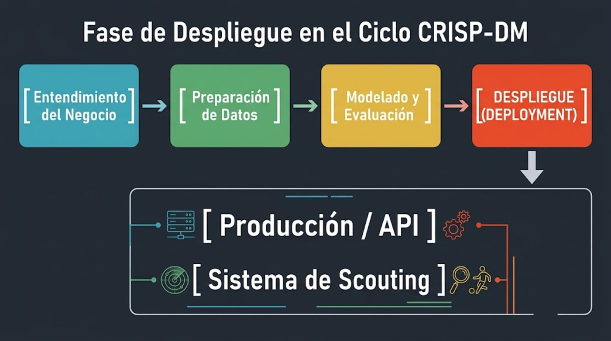
Figura A. Fase de Despliegue en el ciclo CRISP-DM. Fuente: guía docente, Semana 9.
La Fase de Despliegue (Deployment) en CRISP-DM
Es la última fase del ciclo: el modelo se pone al servicio del negocio. Un modelo de Machine Learning no genera valor mientras viva únicamente dentro de un Jupyter Notebook o de un script local de entrenamiento. El reto técnico es que el modelo óptimo entrenado con RandomForestClassifier o GridSearchCV existe sólo en la memoria RAM del proceso de Python: si se cierra la ejecución, se pierde todo lo aprendido (las reglas de decisión de los árboles y las medianas de imputación). En este proyecto el despliegue se materializa en dos salidas: la API de producción (main_api.py) y el sistema de scouting que la consume (index.html e inferencia_nuevos_jugadores.py).
Persistencia de Modelos: Joblib vs Pickle
La serialización convierte la estructura de un objeto de Python, con todos sus parámetros y su estado interno, en un flujo de bytes que se guarda en disco como .joblib o .pkl. Pickle es el módulo nativo de Python para serializar objetos en general. Joblib está optimizado para objetos de scikit-learn y para estructuras con grandes arreglos de NumPy, por lo que es más rápido y eficiente en disco. Por eso el proyecto usa joblib.dump() en el entrenamiento y joblib.load() en producción.
Regla de Oro en Producción
No basta con guardar el modelo final: se debe guardar el pipeline completo o los transformadores de datos (imputadores, encoders) para que los datos nuevos reciban exactamente el mismo preprocesamiento que los de entrenamiento. Por eso el archivo modelo_scouting_rf.joblib es un paquete de despliegue (un diccionario) que contiene, además del modelo, columnas_X, medianas_estatura, mediana_global_estatura, mediana_global_edad y umbral_elite_eur, tal como lo propone el Script 1 de la guía.
Degradación del Modelo y Monitoreo: Data Drift
Una vez desplegado, el rendimiento del modelo no permanece estático. El Data Drift (deriva de datos) ocurre cuando cambia con el tiempo la distribución de las variables de entrada X; por ejemplo, la inflación en los precios del mercado de fichajes altera la distribución del valor comercial y, con ella, el umbral Élite de 700.000 EUR que se aprendió en el entrenamiento.
Concept Drift (Deriva del Concepto)
Ocurre cuando cambia la relación entre X e Y; por ejemplo, cambios en el reglamento o en el estilo de juego que vuelven ciertas características físicas más o menos valiosas. En ese caso, aunque los jugadores tengan los mismos perfiles, el modelo deja de acertar y debe reentrenarse.
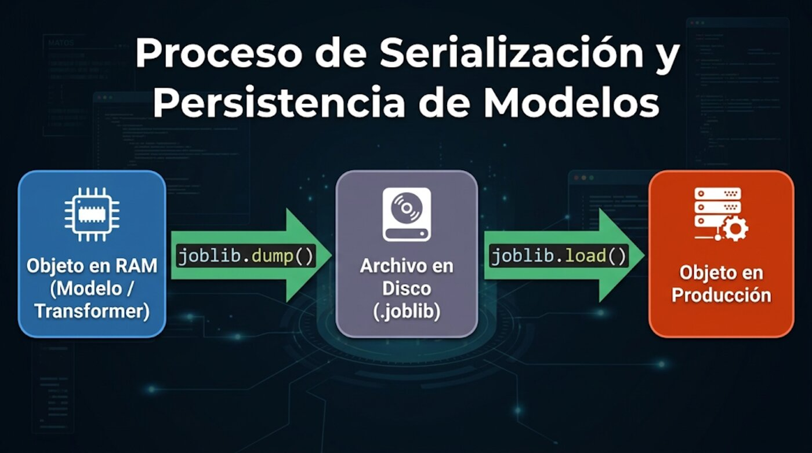
Figura B. Proceso de serialización y persistencia: objeto en RAM → joblib.dump() → archivo .joblib → joblib.load() → objeto en producción. Fuente: guía docente, Semana 9.
3. Análisis de Resultados del Código y Experimentos
Todos los resultados provienen de la ejecución de exportar_modelo.py contra la base MySQL transfermarkt (semilla random_state=42). Las métricas completas quedan guardadas en reports/metricas.json.
3.1 Datos procesados
Concepto
Valor
Registros procesados
41.495
Estaturas nulas imputadas
2.183
Umbral Élite (P75)
700.000 EUR
Clase 0 – Estándar
30.418 (73,3 %)
Clase 1 – Élite
11.077 (26,7 %)
Train / Test (80/20 estratificado)
33.196 / 8.299
Variables (X)
edad, estatura_cm + 4 dummies de posición
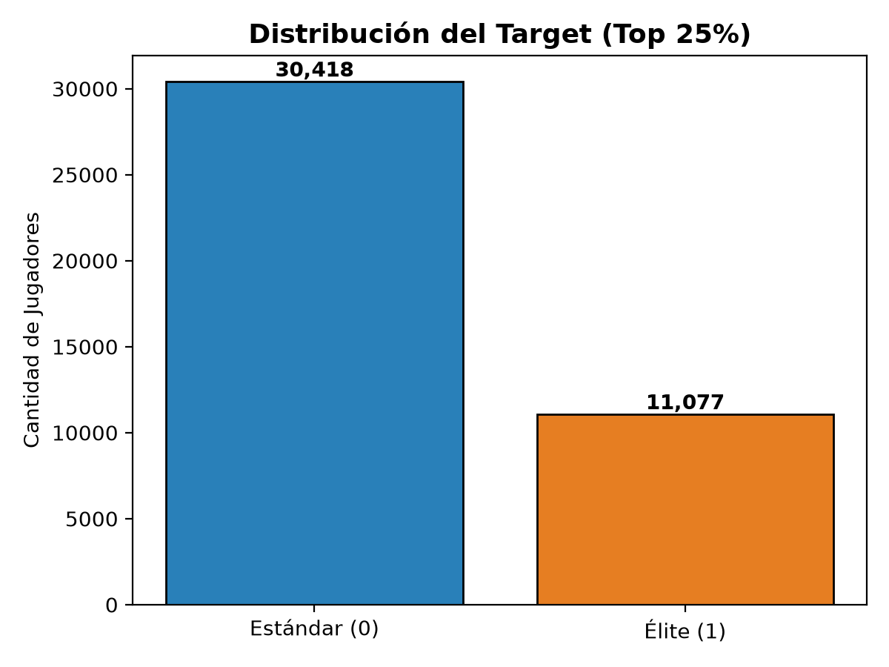
Figura 1. Desbalance de clases del target.
3.2 Diagnóstico de Overfitting
Modelo
Acc. Train
Acc. Test
Brecha
Precision Élite
Recall Élite
F1 Élite
Árbol sin límite (max_depth=None)
0,7581
0,7138
4,43 pp
0,391
0,130
0,195
Árbol podado (max_depth=3, min_samples_leaf=10)
0,7330
0,7331
−0,01 pp
0,000
0,000
0,000
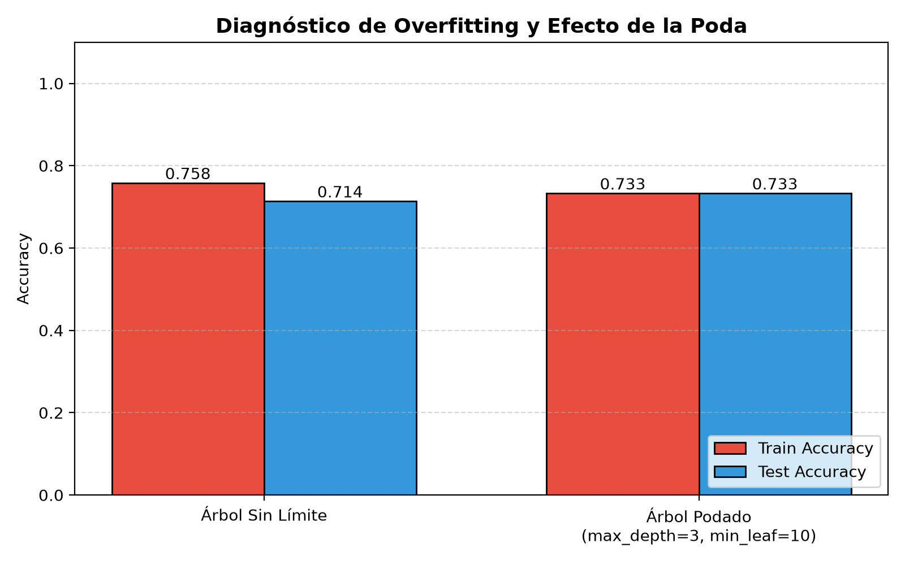
Figura 2. Accuracy en Train vs Test: árbol no restringido vs árbol con poda previa.
Interpretación. El árbol sin límite creció hasta una profundidad de 25 niveles y 2.701 hojas: memorizó combinaciones muy específicas de edad, estatura y posición. Su accuracy cae 4,43 puntos porcentuales de Train a Test, evidencia clara de sobreajuste. La brecha no es mayor porque sólo hay 6 variables con pocos valores distintos (edad y estatura son enteros), de modo que muchos jugadores comparten exactamente el mismo perfil y ni siquiera un árbol infinito puede separarlos; aun así, el árbol libre rinde en Test peor que el árbol simple.
La poda previa eliminó la brecha por completo (Train ≈ Test = 0,733): el modelo generaliza. Sin embargo, la Tabla muestra una advertencia importante: el árbol podado tiene F1 = 0 porque predice «Estándar» para todos los jugadores. Su accuracy de 0,7331 coincide exactamente con la de un clasificador que siempre responde la clase mayoritaria. Este es el caso de la paradoja de la exactitud, que se resuelve en la sección siguiente.
3.3 Paradoja de la exactitud y rebalanceo de clases
Modelo (evaluado en Test)
Accuracy
Precision Élite
Recall Élite
F1 Élite
Clasificador «siempre Estándar» (DummyClassifier)
0,7331
0,000
0,000
0,000
Árbol podado sin pesos
0,7331
0,000
0,000
0,000
Árbol max_depth=4, class_weight='balanced'
0,6090
0,378
0,723
0,497
Random Forest optimizado (balanced)
0,6075
0,382
0,765
0,510
Al aplicar class_weight='balanced', la accuracy global baja de 73 % a 61 %, pero el modelo pasa de no detectar a ningún jugador Élite a detectar el 72–76 % de ellos. Para el negocio de scouting esto es lo relevante: un falso negativo (dejar escapar a un futuro jugador de alto valor) es mucho más costoso que un falso positivo (dedicarle un informe a un jugador que resulta ser Estándar).
3.4 Optimización del Random Forest con GridSearchCV
El Random Forest optimizado muestra Train = 0,621 y Test = 0,608: una brecha de sólo 1,3 pp, a pesar de tener árboles de profundidad 8. El promedio de 200 árboles construidos con muestras Bootstrap y subconjuntos aleatorios de variables controla la varianza que sí afectaba al árbol individual.
3.5 Evaluación del ensamble y curva ROC-AUC
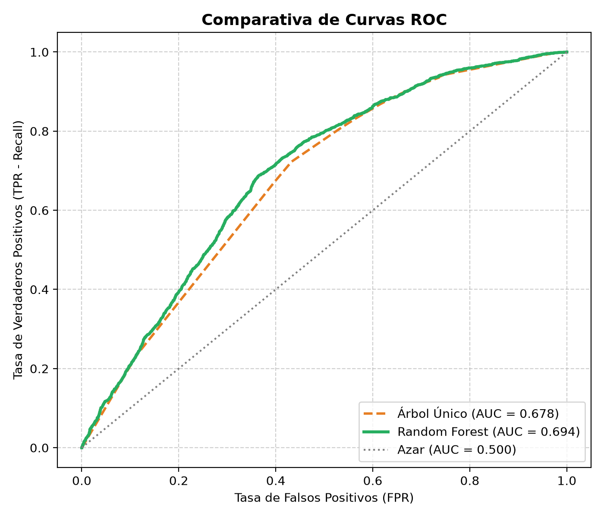
Figura 3. Curvas ROC comparativas en el conjunto de Test: Árbol único (max_depth=4, balanced) vs Random Forest optimizado.
Modelo
AUC (Test)
Clasificador aleatorio (referencia)
0,500
Árbol podado (max_depth=3, min_samples_leaf=10)
0,668
Árbol único (max_depth=4, class_weight='balanced')
0,678
Random Forest optimizado
0,694
Interpretación. La curva del Random Forest queda por encima de la del árbol único en casi todo el rango de umbrales, y su AUC sube de 0,678 a 0,694. Un AUC de 0,694 significa que, si se toma al azar un jugador Élite y uno Estándar, el modelo le asigna mayor probabilidad de ser Élite al primero en aproximadamente el 69 % de los casos. Es una capacidad de discriminación moderada, claramente mejor que el azar, pero lejos de la perfección. Además, la curva del árbol único es escalonada (sólo tiene 16 hojas, es decir, 16 probabilidades posibles), mientras que la del bosque es continua: el ensamble produce un ranking de jugadores más fino, que es lo que necesita un analista para ordenar una lista de candidatos.
El techo de desempeño no lo pone el algoritmo sino la información disponible: con sólo edad, estatura y posición no es posible saber si un jugador es bueno. Variables de rendimiento (minutos, goles, asistencias, liga y club actual) aumentarían de forma notable el AUC.
3.6 Interpretación de la importancia de variables
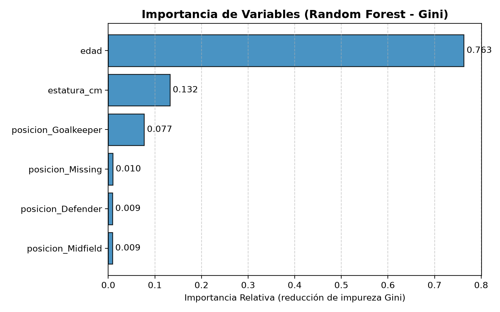
Figura 4. Importancia de variables del Random Forest (reducción media de impureza Gini).
Rango de edad
% Élite
≤ 20
35,7 %
21 – 23
35,2 %
24 – 26
38,3 %
27 – 29
37,0 %
30 – 32
26,5 %
33 +
11,0 %
Posición
% Élite
Estatura mediana
Attack
29,6 %
180 cm
Midfield
28,2 %
179 cm
Defender
27,0 %
184 cm
Goalkeeper
15,3 %
189 cm
Missing
1,6 %
179 cm
Edad (0,763) – variable demográfica dominante. Aporta tres cuartas partes de la reducción de impureza. El valor comercial sigue el ciclo de vida del futbolista: crece en la juventud, alcanza su máximo entre los 24 y 29 años (37–38 % de Élite) y cae con fuerza a partir de los 30 (26,5 %) y sobre todo después de los 33 (11 %), porque al club comprador le quedan menos años de rendimiento y de reventa. Además, la edad se calcula a la fecha actual y la base incluye jugadores retirados o inactivos cuyo último valor registrado es bajo, lo que refuerza la relación.
Estatura (0,132) – variable física. Es la segunda en importancia, aunque buena parte de su efecto es indirecto: la estatura distingue posiciones (los porteros son los más altos) y, dentro de cada posición, permite ajustes finos. Al ser continua tiene muchos puntos de corte posibles, lo que también eleva su importancia Gini.
Posición Goalkeeper (0,077). Es la única dummy relevante: los porteros tienen la mitad de tasa de Élite (15,3 %) que los jugadores de campo, porque el mercado paga menos por ellos y cada equipo sólo alinea uno.
Defender, Midfield y Missing (< 0,01 cada una). Entre delanteros, mediocampistas y defensas la tasa de Élite es casi igual (27–30 %), por lo que la posición de campo apenas discrimina. La categoría «Missing» es muy rara (127 jugadores) y casi nunca es Élite.
4. Arquitectura de Despliegue
4.1 Diagrama del flujo de datos
Figura 5. Flujo de datos del ecosistema analítico: entrenamiento fuera de línea e inferencia en línea mediante arquitectura cliente-servidor.
4.2 Componentes y ejecución
Archivo
Función
src/database/connection2.py
Clase MySQLConnector: lee credenciales desde .env y ejecuta consultas con SQLAlchemy + PyMySQL, devolviendo un DataFrame.
exportar_modelo.py
Script 1 de la guía (exportación del pipeline), ampliado con el diagnóstico de overfitting, la optimización con GridSearchCV y las gráficas. Reentrena el modelo final con el 100 % de los datos usando los mejores hiperparámetros.
inferencia_nuevos_jugadores.py
Script 2 de la guía: carga el paquete con joblib.load(), aplica las mismas reglas de imputación y codificación y predice un lote de jugadores nuevos.
models/modelo_scouting_rf.joblib
Paquete de despliegue: modelo, columnas de X, posiciones válidas, medianas de imputación, umbral Élite y AUC.
main_api.py
API REST con FastAPI. Esquemas Pydantic Jugador (entrada) y Prediccion (salida), CORS habilitado, validación de posición (HTTP 422 si es inválida).
index.html
Aplicativo web: formulario, fetch asíncrono a la API, etiqueta Élite/Estándar y barra de progreso animada con la probabilidad.
python exportar_modelo.py # entrena y genera models/modelo_scouting_rf.joblib
python inferencia_nuevos_jugadores.py # inferencia por lotes con el paquete serializado
uvicorn main_api:app --reload # levanta la API en http://127.0.0.1:8000
# Aplicativo web: http://127.0.0.1:8000/ · Documentación Swagger: http://127.0.0.1:8000/docs
Un detalle importante de la inferencia: en producción llega un único jugador, por lo que get_dummies se aplica sin drop_first (con drop_first=True se eliminaría la única columna existente) y luego se hace reindex(columns=columnas_X, fill_value=0), que alinea la fila con las columnas exactas del entrenamiento y descarta la categoría de referencia (Attack).
4.3 Capturas de la API en ejecución
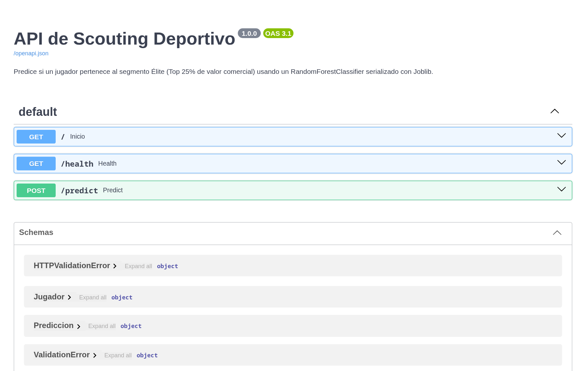
Figura 6. Documentación interactiva (Swagger UI) generada por FastAPI con los endpoints y esquemas Pydantic.
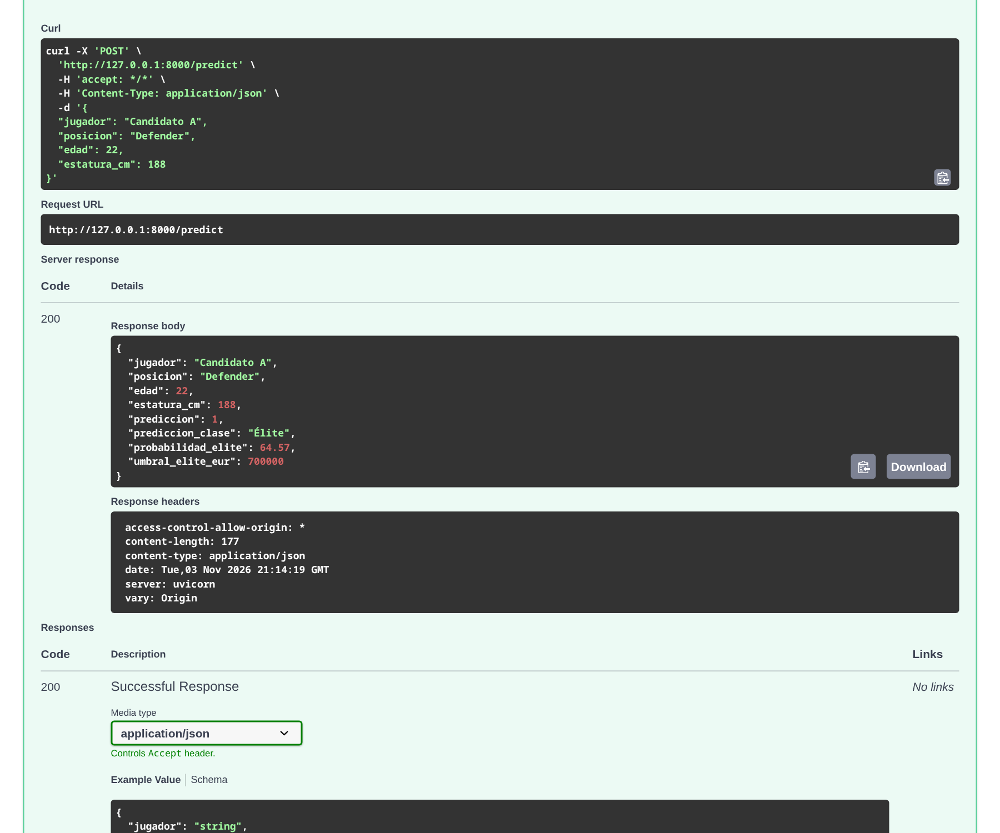
Figura 7. Ejecución de POST /predict: petición JSON y respuesta 200 con la predicción y la probabilidad.
4.4 Aplicativo web respondiendo a jugadores nuevos
El aplicativo cliente, llamado Radar Élite, usa un tema oscuro con acentos verdes e íconos SVG propios del fútbol. Para elegir la posición se usan tarjetas con íconos. El resultado muestra una ficha del jugador, un medidor circular y la barra de progreso con la probabilidad, además de una recomendación de prioridad para el analista: alta si la probabilidad es ≥ 50 %, media entre 30 y 50 % y baja por debajo de 30 %.
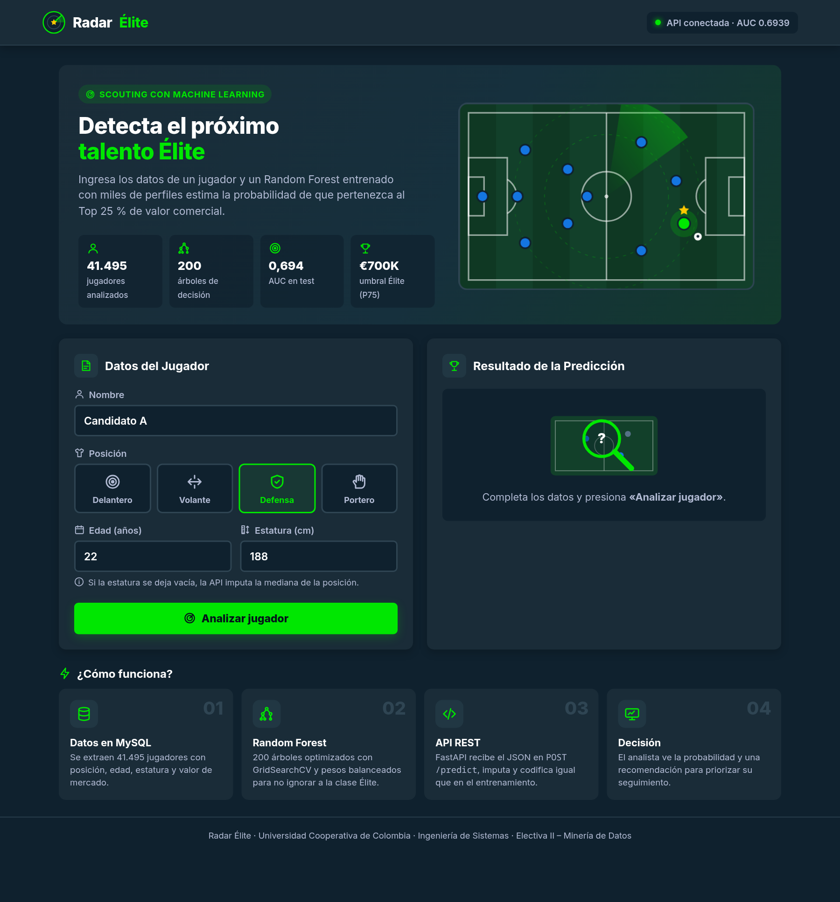
Figura 8. Defensa de 22 años y 188 cm → Élite con 64,57 % de probabilidad.
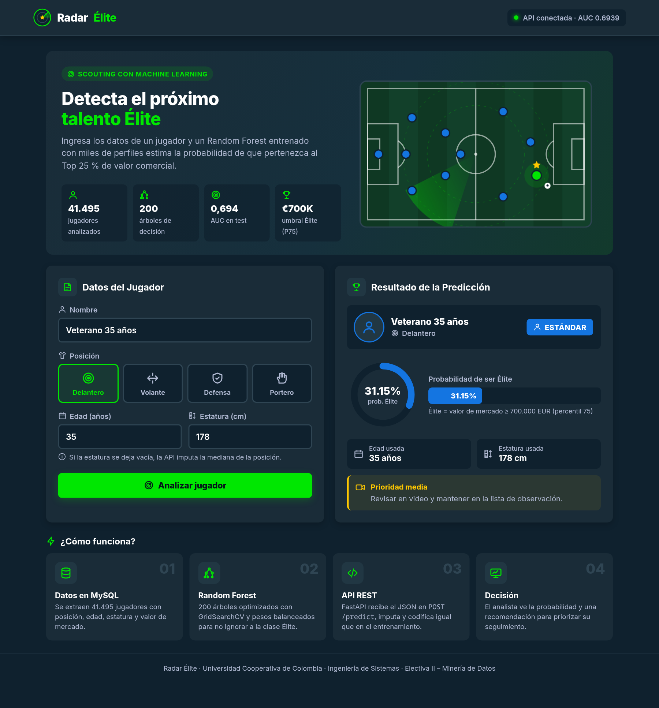
Figura 9. Delantero de 35 años y 178 cm → Estándar con 31,15 %: la edad reduce el valor esperado.
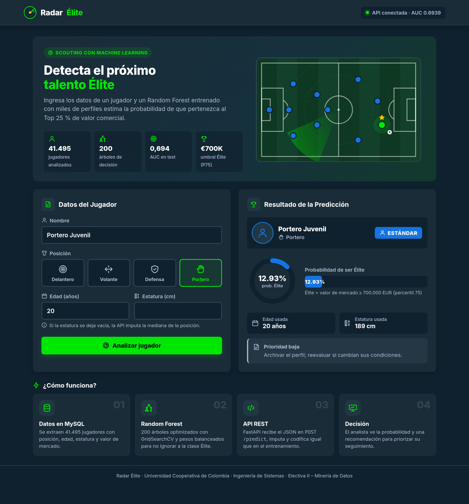
Figura 10. Portero de 20 años sin estatura: la API imputa 189 cm (mediana de Goalkeeper) y predice Estándar con 12,93 %.
Jugador de prueba
Posición
Edad
Estatura
Predicción
Prob. Élite
Candidato A
Defender
22
188
Élite
64,57 %
Candidato B
Goalkeeper
29
189 (imputada)
Estándar
34,97 %
Candidato C
Midfield
19
172
Élite
58,58 %
Veterano
Attack
35
178
Estándar
31,15 %
Portero Juvenil
Goalkeeper
20
189 (imputada)
Estándar
12,93 %
Como el modelo se entrenó con class_weight='balanced', el umbral de 50 % ya está desplazado a favor de detectar Élite; la probabilidad debe leerse como un puntaje de prioridad más que como una probabilidad calibrada.
4.5 Inferencia por lotes con el Script 2 de la guía
El script inferencia_nuevos_jugadores.py simula los datos que llegan desde el frontend o desde una API externa, con los mismos tres candidatos de la guía docente (el Candidato B llega sin estatura). Su salida en consola fue:
=================================================
RESULTADO DEL DIAGNÓSTICO DE SCOUTING
=================================================
jugador posicion edad estatura_cm Prediccion_Clase Probabilidad_Elite
0 Candidato A Defender 22 188.0 Élite 64.57
1 Candidato B Goalkeeper 29 189.0 Estándar 34.97
2 Candidato C Midfield 19 172.0 Élite 58.58
=================================================
Las probabilidades son idénticas a las que devuelve la API para los mismos jugadores (sección 4.4). Esto confirma la regla de oro: el script por lotes y el servicio web cargan el mismo paquete y aplican el mismo preprocesamiento. Al Candidato B se le imputaron 189 cm, la mediana de los porteros aprendida en el entrenamiento.
Ajuste al código de la guía. En la versión original de la guía, la inferencia usaba get_dummies(..., drop_first=True). En un lote pequeño, la primera categoría presente no siempre es la referencia del entrenamiento (Attack): con estos tres candidatos se eliminaba la columna posicion_Defender, y el modelo trataba al Candidato A como delantero (63,85 % en lugar de 64,57 %). Se aplicó get_dummies sin drop_first y luego reindex(columns=columnas_X, fill_value=0), que descarta automáticamente la columna de referencia y deja la fila alineada con el entrenamiento.
5. Conclusiones y Recomendaciones de Negocio
5.1 Conclusiones
Se completó el ciclo CRISP-DM de punta a punta: los datos salen de MySQL, se transforman con reglas reproducibles, alimentan un modelo optimizado y terminan como un servicio web que cualquier analista puede usar desde el navegador sin saber Python.
El árbol sin restricciones sobreajusta (25 niveles, 2.701 hojas, brecha de 4,43 pp) y la poda previa elimina esa brecha; pero la poda por sí sola produjo un modelo que nunca predice Élite.
La accuracy es una métrica engañosa en este problema. El 73,3 % de accuracy se obtiene sin detectar a ningún jugador Élite. El uso de class_weight='balanced' elevó el recall Élite de 0 % a 76,5 %.
El Random Forest supera al árbol único (AUC 0,694 vs 0,678; F1 0,510 vs 0,497) y generaliza mejor (brecha de 1,3 pp con árboles de profundidad 8), gracias al bagging y al subespacio aleatorio de variables.
La edad es el principal determinante del valor comercial (76 % de la importancia), seguida de la estatura y de ser portero. La posición de campo casi no discrimina.
Serializar el paquete completo (modelo + medianas + columnas) garantiza que un jugador nuevo reciba en producción exactamente el mismo preprocesamiento que en el entrenamiento, incluso cuando le faltan datos.
5.2 ¿Cómo apoya el sistema la toma de decisiones en scouting?
Filtro inicial de candidatos: ante listas de cientos de jugadores, el puntaje de probabilidad permite ordenarlos y concentrar los viajes y los informes de los ojeadores en el grupo con mayor potencial, reduciendo costos.
Prioridad al recall: el modelo detecta 3 de cada 4 jugadores Élite. Se acepta revisar algunos falsos positivos (precision 38 %) a cambio de no dejar escapar talento, que es el error más costoso para un club.
Ventana de oportunidad por edad: el sistema confirma que el valor máximo se da entre los 24 y 29 años; fichar perfiles prometedores antes de los 23 permite comprar barato y vender en el pico. A partir de los 30 años se recomienda priorizar contratos cortos o cesiones.
Integración sencilla: al ser una API REST con JSON, la misma predicción puede consumirse desde la web, una app móvil, una hoja de cálculo o el sistema interno del club.
5.3 Recomendaciones y trabajo futuro
Enriquecer las variables: unir las tablas de apariciones, clubes y competiciones (minutos, goles, asistencias, liga, club actual, pie hábil, años de contrato). Es la acción con mayor impacto esperado sobre el AUC.
Filtrar jugadores activos (por ejemplo, con valor actualizado en las últimas temporadas) para que la edad no capture el efecto de jugadores retirados.
Ajustar el umbral de decisión según el presupuesto del departamento (más alto si hay pocos ojeadores, más bajo si se quiere máxima cobertura) y calibrar las probabilidades.
Monitorear Data Drift y Concept Drift: la inflación del mercado de fichajes mueve el umbral de 700.000 EUR (Data Drift), y los cambios de reglamento o de estilo de juego pueden alterar el valor de los atributos físicos (Concept Drift). Se recomienda comparar periódicamente la distribución de edad, estatura y valor de los jugadores nuevos con la del entrenamiento, vigilar el AUC en producción y volver a ejecutar exportar_modelo.py en cada ventana de transferencias para regenerar el paquete .joblib.
Endurecer el despliegue: restringir CORS a los dominios del club, añadir autenticación por token, registrar las peticiones y contenerizar la API con Docker.